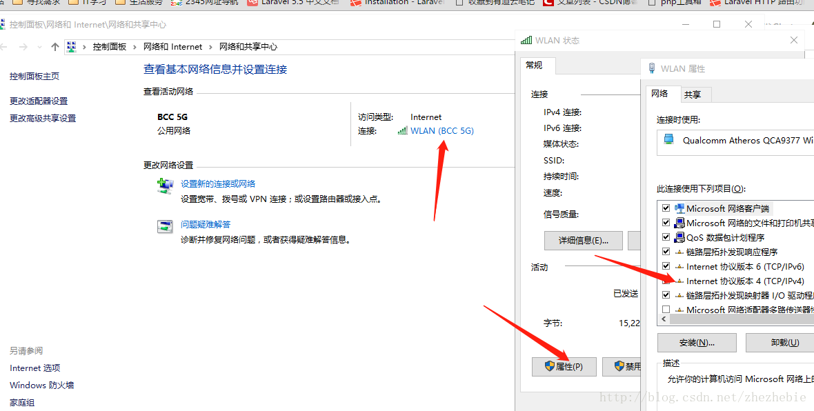
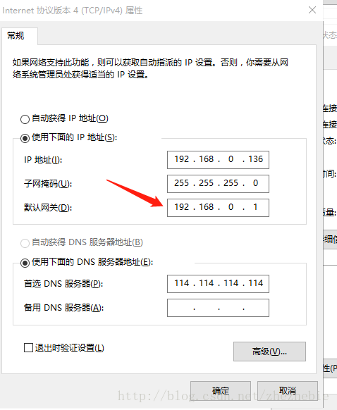
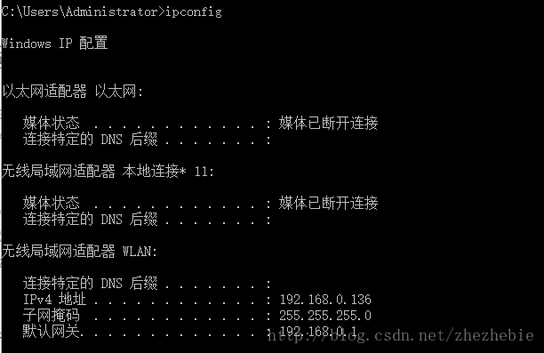
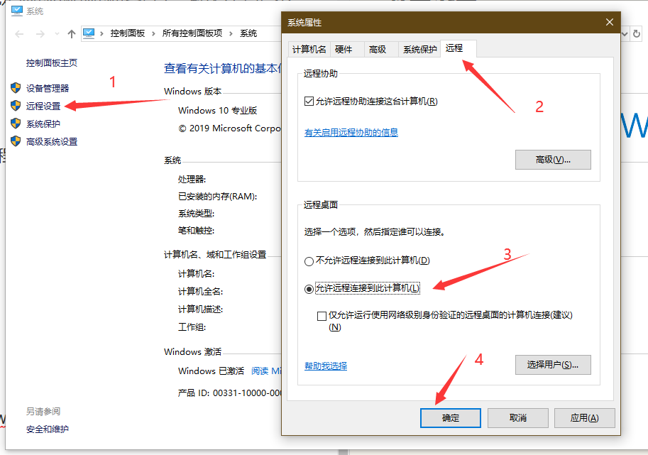
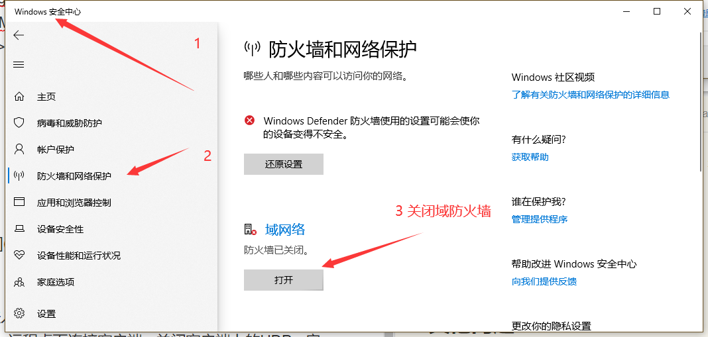
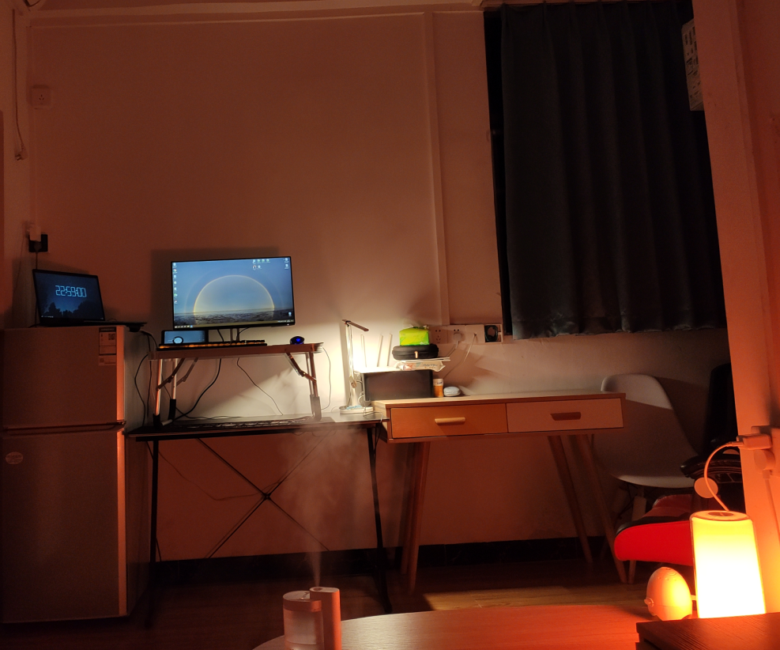
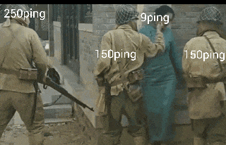

如何愉快的魂穿到公司——内网连接指南¶
首先必要要求¶
公司有VPN连接到内网
获取机器ip¶
参考: [windows下面固定本地ip]
* 查询机器ip
(win + R 召唤)cmd 下 ifconfig.exe
- 固定机器ip
这里建议固定下自己机器的ip,避免重启ip改了。请使用你查询的ip固定。
1. 右键网络->打开网络和共享中心->选择你正连接的网络->属性->双击Tcp/ipv4；

2. 设置ip和掩码，及网关，网关可以在cmd里面输入ipconfig即可看到

3. ifconfig.exe验证

ps. 有可能以后开启机器后连不上网，可能是你的ip被别的机器占了，解决方案是不关电脑。
必要设置¶
- Win + Q 搜索登录选项 设置个密码
- 【我的电脑】右键【属性】，最左边【远程设置】，✔允许远程连接到此计算机(L)
 - Win + Q 搜索安全中心 ----> 防火墙* ----> 关闭域防火墙

连接¶
Win + R 运行以下命令
mstsc /v 192.168.0.136
其他问题¶
- 连接卡顿问题
首先在客户端上，搜索策略组进入策略组编辑窗口，打开计算机配置->管理模板->Windows组件->远程桌面服务->远程桌面连接客户端->关闭客户端上的UDP->启用；
然后在远程主机上，同样进入策略组编辑窗口，打开计算机配置->管理模板->Windows组件->远程桌面服务->远程桌面会话主机->连接->选择RDP传输协议->启用并选择仅使用TCP；
两台机器都重启一下，再连接，就不会卡顿了

